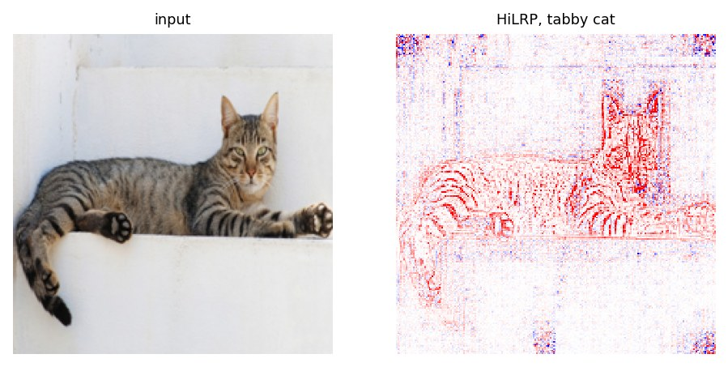
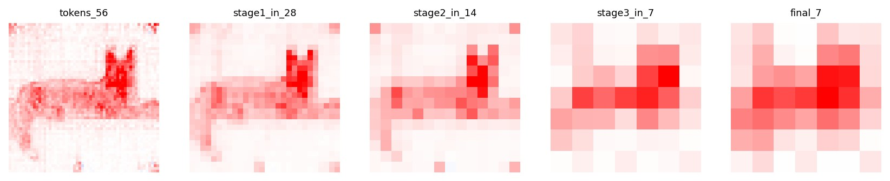

Tutorial
Explain a Vision Transformer's prediction with the hilrp library, from installing it to comparing it fairly against other methods. Every snippet runs as written, in order, and the output shown under it is what it prints.
Install
HiLRP needs Python 3.11.11 or newer and PyTorch 2.1 or newer. One command installs the library and its attribution backend, lxt and zennit.
pip install "hilrp @ git+https://github.com/Nishan-Charlie/Hi-LRP-Towards-One-Trustworthy-Explainable-AI.git"On Windows, set PYTHONUTF8=1 first, or the metadata step of lxt fails with a UnicodeDecodeError. Check the install:
import hilrp
print(hilrp.__version__)
print(hilrp.supported_architectures())0.2.0
{'swin': ('swin',), 'pvt_v2': ('pvt',), 'maxvit': ('maxvit', 'maxxvit'), 'mobilevit': ('mobilevit',), 'efficientvit': ('efficientvit',), 'vit': ('vit', 'deit', 'beit')}Load a model and an image
HiLRP works on unmodified timm models. Preprocess the image the way the model expects; timm reads that from the model itself. Any RGB photo works. This one is the cat used in the rest of the tutorial.
import urllib.request
import timm, torch
from PIL import Image
urllib.request.urlretrieve(
"https://raw.githubusercontent.com/Nishan-Charlie/Hi-LRP-Towards-One-Trustworthy-Explainable-AI/main/images/cat.jpg",
"cat.jpg")
model = timm.create_model("swin_tiny_patch4_window7_224", pretrained=True).eval()
config = timm.data.resolve_data_config({}, model=model)
transform = timm.data.create_transform(**config)
image = Image.open("cat.jpg").convert("RGB")
x = transform(image).unsqueeze(0)
print(x.shape)torch.Size([1, 3, 224, 224])Explain a prediction
One call, one forward and one backward pass. There is no sampling, so the same input always gives the same map. By default HiLRP explains the predicted class; pass target to explain any other.
res = hilrp.attribute(model, x)
print(res["target"], round(res["logit"], 2))
egyptian_cat = hilrp.attribute(model, x, target=285)
print(egyptian_cat["target"])281 8.06
285Class 281 is tabby cat. The result is a dictionary:
| Key | What it holds |
|---|---|
target, logit | The explained class and its logit. |
pixel_map | A [H, W] tensor of signed relevance at the input pixels. Positive values are evidence for the class, negative values evidence against it. |
stage_sums | The conservation trace: (capture, sum of relevance / logit) from the input side to the head. |
stage_maps | Swin only: (capture, [h, w] map), one relevance map per resolution stage. |
Visualize the map
Relevance is heavy-tailed: a few pixels can carry a large share of it, so a plain min-max colour scale washes the map out. show_relevance clips at the 99th percentile of the absolute value and draws it on a diverging scale centred at zero. Show the image the model actually saw, which is the centre crop, not the original photo.
import matplotlib.pyplot as plt
mean = torch.tensor(config["mean"]).view(3, 1, 1)
std = torch.tensor(config["std"]).view(3, 1, 1)
seen = (x[0] * std + mean).clamp(0, 1).permute(1, 2, 0)
fig, (left, right) = plt.subplots(1, 2, figsize=(7, 3.6))
left.imshow(seen)
left.set_title("input", fontsize=8)
left.axis("off")
hilrp.show_relevance(right, res["pixel_map"], title="HiLRP, tabby cat")
fig.savefig("cat_hilrp.png", dpi=160, bbox_inches="tight")
To draw it yourself, hilrp.normalize_for_display(res["pixel_map"]) returns the clipped array and the value to use as the colour limit.
One map per resolution stage
HiLRP tracks relevance at every interface of the network, so on Swin the call you already made also returns a map at each stage. Nothing is recomputed.
fig, axes = plt.subplots(1, len(res["stage_maps"]), figsize=(13, 2.8))
for ax, (capture, stage_map) in zip(axes, res["stage_maps"]):
hilrp.show_relevance(ax, stage_map, title=capture)
print(capture, tuple(stage_map.shape))
fig.savefig("cat_stages.png", dpi=160, bbox_inches="tight")tokens_56 (56, 56)
stage1_in_28 (28, 28)
stage2_in_14 (14, 14)
stage3_in_7 (7, 7)
final_7 (7, 7)
Read the conservation trace
stage_sums says how much of the logit the relevance at each capture accounts for. 1.00 means it sums exactly to the logit.
for capture, ratio in res["stage_sums"]:
print(f"{capture:14s} {ratio:+.2f}")
print(f"{'pixels':14s} {res['pixel_map'].sum().item() / res['logit']:+.2f}")tokens_56 +1.07
stage1_in_28 +1.03
stage2_in_14 +1.10
stage3_in_7 +1.26
final_7 +1.00
pixels +0.77Use the trace as a diagnostic, not a score. On Swin and PVT-v2 the rules conserve exactly when the weights have no biases, so any gap on a trained model is what its biases absorb. On MaxViT, MobileViT-v2, EfficientViT and plain ViTs the sum drifts with depth; the measured values per backbone are in RESULTS.md.
Use any supported backbone
The call does not change. hilrp.attribute reads the architecture from the timm model and picks the rules for it. Each model gets its own preprocessing: MobileViT-v2, for one, expects a 256-pixel input.
for name in ["pvt_v2_b2", "maxvit_small_tf_224", "mobilevitv2_100", "efficientvit_b2", "deit_base_patch16_224"]:
other = timm.create_model(name, pretrained=True).eval()
other_x = timm.data.create_transform(**timm.data.resolve_data_config({}, model=other))(image).unsqueeze(0)
out = hilrp.attribute(other, other_x)
print(f"{name:22s} class {out['target']} map {tuple(out['pixel_map'].shape)}")pvt_v2_b2 class 281 map (224, 224)
maxvit_small_tf_224 class 285 map (224, 224)
mobilevitv2_100 class 281 map (256, 256)
efficientvit_b2 class 281 map (224, 224)
deit_base_patch16_224 class 281 map (224, 224)| Family | Attention | Checked on |
|---|---|---|
| Swin | windowed and shifted, patch merging | swin_tiny, swin_base |
| PVT-v2 | spatial reduction | pvt_v2_b0, pvt_v2_b2 |
| MaxViT | multi-axis | maxvit_tiny_tf_224, maxvit_small_tf_224 |
| MobileViT-v2 | separable, convolution hybrid | mobilevitv2_050, mobilevitv2_100 |
| EfficientViT (MIT) | linear | efficientvit_b0, b1, b2 |
| ViT, DeiT | global self-attention | vit_tiny, vit_base, deit_base |
CNNs are out of scope: hilrp.attribute on a ResNet raises a ValueError that lists the supported name prefixes.
Options
Keyword arguments go straight to the rules for that architecture family.
hilrp.attribute(model, x, gamma=0.25) # gamma rule on Linear and Conv2d layers (the default)
hilrp.attribute(model, x, conv_gamma=0.05) # a separate gamma for convolutions
hilrp.attribute(model, x, attn_mode="attnlrp") # Swin and ViT only: AttnLRP rules inside attention
hilrp.attribute(model, x, arch="swin_tiny_patch4_window7_224") # if the model has no timm configThe default attn_mode="cp" treats the attention matrix as fixed weights and is the conserving choice. "attnlrp" is there as a diagnostic.
Compare against other methods safely
HiLRP installs its rules by patching classes such as nn.LayerNorm, nn.GELU and the timm attention blocks. The patches apply to the whole Python process and are never undone. Forward passes give the same numbers as before, but gradients do not, so a gradient-based method you run after HiLRP is no longer the method you meant to compare against.
The session above is already patched. In a fresh session, compute every other method first:
import timm, torch, hilrp
from PIL import Image
model = timm.create_model("swin_tiny_patch4_window7_224", pretrained=True).eval()
transform = timm.data.create_transform(**timm.data.resolve_data_config({}, model=model))
x = transform(Image.open("cat.jpg").convert("RGB")).unsqueeze(0)
print(hilrp.patched_ports())
# 1. any other gradient-based method, on the unpatched model
x_grad = x.clone().requires_grad_(True)
model(x_grad)[0, 281].backward()
saliency = x_grad.grad.abs().sum(1)[0]
# 2. HiLRP last: the process is patched from here on
res = hilrp.attribute(model, x)
print(hilrp.patched_ports())[]
['hilrp.swin_lxt']Or run each method in its own process. The benchmark in the repository enforces this: it rejects any run that mixes HiLRP with another method.
Explain something other than a class
The backward pass can start from any differentiable scalar. A self-supervised model has no classifier, so explain how similar it finds the image to a mirrored view of itself:
from hilrp.vit_lxt import attribute_ssl_similarity
dino = timm.create_model("vit_base_patch16_224.dino", pretrained=True).eval()
dino_x = timm.data.create_transform(**timm.data.resolve_data_config({}, model=dino))(image).unsqueeze(0)
out = attribute_ssl_similarity(dino, dino_x, x_ref=torch.flip(dino_x, dims=[3]))
print(round(out["similarity"], 3), tuple(out["pixel_map"].shape))0.996 (224, 224)For CLIP, hilrp.clip_lxt.attribute_clip_image_text explains the similarity between an image and a caption with the same rules. The repository's clip_demo.py is a complete example.
API reference
Everything below is importable from hilrp unless a module is named.
hilrp.attribute(model, x, target=None, *, arch=None, **kwargs)- Explain one prediction of a supported timm model in one backward pass.
xis a[1, 3, H, W]batch, normalized as the model expects. Returns the dictionary described in step 3. The keyword arguments are those in step 8. hilrp.attributor_for(arch)- The attribution function for a timm architecture name, for example
"pvt_v2_b2". RaisesValueErrorfor an unsupported architecture, andImportErrorwith the install command if the backend is missing. hilrp.supported_architectures()- A dictionary from each supported family to the timm name prefixes it covers.
hilrp.patched_ports()- The families whose patches are live in this process. An empty list means no other method has been affected yet.
hilrp.show_relevance(ax, pixel_map, title=None, percentile=99.0, smooth_sigma=0.0, cmap="bwr")- Draw a relevance map on a matplotlib axis with robust clipping. Returns the axis.
hilrp.normalize_for_display(pixel_map, percentile=99.0, smooth_sigma=0.0)- Return
(clipped_map, vmax)for drawing it yourself withvmin=-vmax, vmax=vmax. Smoothing is for display only and needsscipy. hilrp.vit_lxt.attribute_ssl_similarity(model, x, x_ref, gamma=0.25, conv_gamma=None)- Label-free attribution for a ViT: which evidence in
xsupports the similarity of its class token to that ofx_ref. Returnssimilarity,pixel_mapandstage_sums. hilrp.clip_lxt.attribute_clip_image_text(model, image, text_embed, gamma=0.25)- Attribute an open_clip model's image-text similarity to the pixels.
text_embedis a precomputed, L2-normalized and detached text embedding. Returnssimilarityandpixel_map.